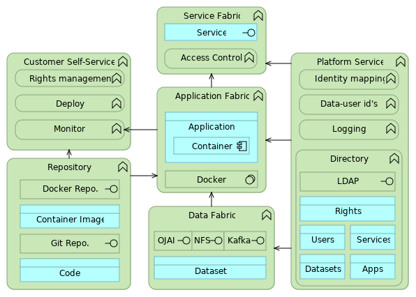

Dette dokument er en vejledning i udarbejdelse af applikationer på et nye udviklings- og driftsmiljø hos Statens IT. Det er en del af en serie af dokumenter, der beskriver et samarbejde mellem SIT, DIGST og DMI, som startede med en aftale om GovCloud. Serien består desuden af en generel introduktion og en teknisk specifikation.
Velkommen!
GovCloud vision: Fremtidens foretrukne udviklings- og drifts-miljø for Statens ITs kunder.
I opgave beskrivelsen har der formentlig stået noget om.. .Udvikling af container baserede applikationer, Anvendelse af asynkrone meddelelser som integration mellem applikationskomponenter, Anvendelse af NoSQL dokumentdatabaser, Udvikling af HTTP services der følger REST, Token baseret adgangskontrol.
Dette dokument forsøger at gøre det meget konkret hvordan vi har tænkt at applikationer bedst udvikles på netop vores platform.
Så velkommen til fremtiden! Og håb om at I finder jeg godt tilpas på platformen...
Hvad er GovCloud
3 linjer om cloud.
3 linjer om Gov+Cloud
PaaS... med mulighed for SaaS
CloudBroker
Hvad tilbyder GovCloud
5 + 5 services...
GovCloud er en selvbetjent og i høj grad automatiseret service leveret af Statens IT. Den samlede service består dels af en selvbetjenings-løsning der anvendes af ansatte og konsulenter hos Statens ITs kunder, dels af en række tekniske services der anvendes af kundes applikationer. [Sætning om at den samlede lifecycle management for den samlede GovCloud service foretages i fæøllesoffentligt regi].
| Til udviklere | Til applikationer |
|---|---|
git. – opbevaring og versionsstyring af applikationskode
| /id -- billetudsteder og omveksler
|
reg. – opbevaring og versionsstyring af applikations images
| /log -- opsamling og søgning i hændelser
|
kub. – selvbetjening til deployment af applikationer
| /stream -- data i meddelelsstrømme/td>
|
stat. – overvågning af platform og applikationer
| /table -- data på tabelform
|
coll. – online samarbejdsværktøj
| /file -- data i filer og foldere
|
Mere detaljerede beskrivelser nedenfor.
1. Før du går i gang
Advarsel.... Cloud Native og DevOps er et meget stor skift i den måde vi tænker applikationer på. Bla.
-
Services, Apllikationer og Data forvaltes særskilt... siloen er væltet..og rejst igen.
-
Platformen skalerer... så ok at svine lidt med pladsen...vente med at optimere. Forudsætning er bla. REST. Stateless! Det er vigtigt hvad der ryger i hvilke container.
-
Service kan implementeres meget simpelt. ... ex Go uden midleware... så pas på med bloaded midleware
Noget af det kan læses på microservices / 12 factor apps
2. Et eksempel ForTheBirds
Vi vil anvende et gennemgående eksempel ForTheBirds der gradvist udvides og tager de forskellige dele af platformen i anvendelse, og vi prøver at følge en naturlig rækkefølge.
Vi ønsker at overvåge platformens tilstand og rapporterer det til en extern status service
Verden er ikke sort/hvid og platforme er ikke rød eller grøn. Så vi har brug for detaljerede granulerede statusser, så anvender selv kan vurdere om de dele der er nødvendige for deres applikationer er i status hvor anvender skal til at gøre noget... "Sætte et skilt op i vinduet"...
For at gøre det nemmere (og lidt sjovere) bruger vi en analogi/en fælles reference. Pixars For The Birds. En lang række små fugle med hver sin personlighed, ser forskellige dele af verden. Og der kan være mange fugle på samme tråd.
3. Centrale begreber
Som sagt, er det et skift. Og vi skal lige være enige om nogle centrale begreber for ikke at få forbi hinanden.Der er services (SOA). Og forskellige slags. Applikations Service er dem som en myndigheds kunder (borgere og virksomheder) kan se. Platform services er dem SIT tilbyder myndigheder i rollen som platformsanvender 'kunder hos statens it'. To slags platform services. Dem mod mennesker og dem mod applikationer.
Der er applikationer. Og de består af komponenter. Er lavet af kode og pakket ind i images der kan kører i containere.
Der er data. GDPR Principle of "accountability" (ref art 5, stk 2) extends to all data. All data stored in the platform MUST have a registered data controller.
Så hvad er en 'løsning'... Det er de dele der skal fungere for at en applikationsservice virker, nogle dele kontrolleres af udbyderen af servicen, andre af platformsudbydere og andre igen måske af andre udbydere.
4. Code, Build and Containerize
Vi starter på en din egen bærbare. Men jeg har jo en cloud.... jo men du skal da ikke stoppe med at udvikle bare fordi nettet ryger eller du sidder på et fly.
https://www.docker.com/blog/docker-golang/
-
Installer Docker
-
Find a git repository to place your code in.
-
Write some code
ForTheBirds.go
import ( "net/http" ) func root( w http. ResponseWriter, _* http. Request) { w. WriteHeader( http. StatusOK) w. write( "For The Birds - Pixar" ) } func main() { http. HandleFunc( "/" , root) http. ListenAndServe( ":8080" , nil ) }
-
Build your Code
docker run -v
$( pwd) :/go/bin --rm\ golang go get github.com/golang/example/hello/... -
Write a docker build script
FROM scratch COPY ./hello /hello </pre> Lets leave the entrypoint out.4 . Create an image <xmphighlight = "bash" > docker build
-
Run your image
docker run
-
Test your service
curl localhost:8080
og du bør se teksten "For The Birds - Pixar".
5. Deploy
For at kunne komme hurtigt igang og for at hurtigt at kunne efterprøve kunders behov, er der etableret en midlertidig selvbetjeningsløsninger på `k8s.govcloud.dk`. Løsningen er realiseret ved anvendelse af Rancher.
-
k8s.govcloud.dkversion 1 - 20190201
Her understøttes kunders deployment og monitorering af applikationer, samt deployment af services.
Det er planen at udvikle en simple og mere målrettet selvbetjening, der skal sikre større uafhængighed af den underliggende implementering, og tillade tilpasning af sprogbrug til fællesoffentlige begreber om it-systemer. Ansvaret for løsningen er stadig under diskussion.
-
cloud.gov.dkEndnu ikke planlagt
6. User and application interfaces
6.1. Tekniske services til applikationer (GovCloud API?)
I henhold til aftalen om GovCloud, skal den fulde lifecycle af tekniske services styres i fælles regi. Det vi sige at der løbende tages stilling til hvilke services der tilføjes og eventuelt udfases.
Følgende services er tilgængelig i GovCloud Platform API 1.0.
6.1.1. ID
Applikationer der ønsker at genkende brugere der allerede kendes af Statens IT, kan anvende platformens secure token service / billetomveksler. Kald til applikationsservice der er kræver en genkendt bruger vil få tilknyttet et JSON Web Token med oplysninger om brugerens identitet. Hvis der er brug for omveksling af identitetet mellem forskellige idp’er eller føderationer kan den interne secure token service anvendes.
-
sts.govcloud.dkversion 1 - 20190201
6.1.2. Dataservice
Adgangskontrol til kunders datasæt styres på applikationsniveau og håndhæves af platformen. Dataservice lader applikationer skrive og læse datasæt gennem tre forskellige protokoller:
Network Files System (NFS) lader applikationer skrive og læse binære filer fra en lang række operativsystemer og programmeringssprog. Et datasæt repræsenteres af et NFS Directory.
-
data.govcloud.dk:2049version 1 - 20190201
Apace Kafka lader applikationer skrive og læse meddelelser til streams og topics. Et datasæt repræsenteres af en Kafka Stream.
-
data.govcloud.dk:8082version 1 - 20190201
OJAI lader applikationer at skrive og læse JSON dokumenter til dokumentsamlinger. Et datasæt repræsenteres af en OJAI Document Store.
-
data.govcloud.dk:8243version 1 - 20190201
6.1.3. Log
Applikationers stdout/stderr, Service Fabric og Data Fabric sender loghændelser til en fælles log service. Log filer er tilgængelig i selvbetjeningsløsninger og for kundens applikationer via
-
log.govcloud.dkTBD
6.1.4. Directory
Oplysninger om kundens services, applikationer, datasæt og deres rettigheder gemmes af selvbetjeningsløsningen i Directory servicen. Oplysningerne er tilgængelige for kundens applikationer via LDAP.
-
ldap.govcloud.dk:349TBD
6.1.5. External keys
Kunder der ønsker at begrænse anvendelsen af applikations services kan anvende eksterne nøgler (API keys). Eksterne nøgler giver ingen ekstra sikkerhed, men en mulighed for at begrænse eller identificere adgang ved fx misbrug.
-
services.govcloud.dk/keymanversion 1 - TBD
6.2. DevTools (SaaS)
Statens IT tilbyder - som supplement til GovCloud - en række sammenhængende services til brug for applikationsudvikling. På sigt vil en fuld DevOps proces kunne understøttes hos SIT, men indledningsvis tilbydes services til opbevaring af kildekode og docker container images.
6.2.1. Code repository
Kunder kan bringe deres applikationskode under versionskontrol i det fælles repository med authentication fra Statens ITs centrale brugerstyring.
-
git.govcloud.dkversion 1 - 20190201
6.2.2. Container Image Repository
Kunder kan opbevare container images til deployment på GovCloud i det fælles repository med authentication fra Statens ITs centrale brugerstyring.
-
gitlab.govcloud.dkversion 1 - 20190201
7. Examples of usage GovCloud PaaS
7.1. Datadistribution
7.2. Trusted Messaging
7.3. Datascience/BI/Analytics
7.4. Static Website
7.5. RPA Robot Proces Automation
